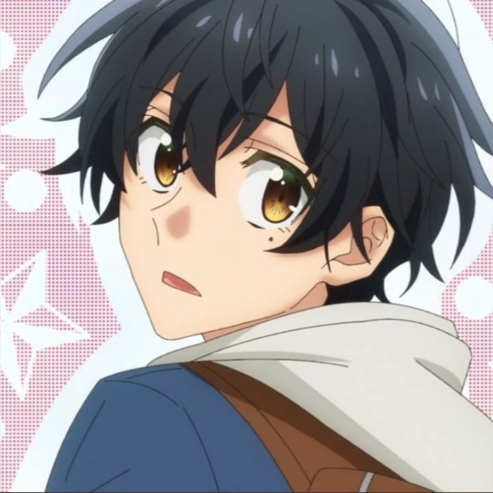
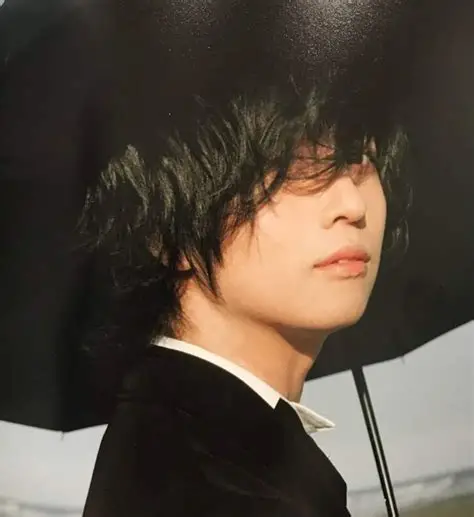

Miyano Yoshikazu é um estudante tímido e reservado que possui uma grande paixão por mangás do gênero Boys' Love. Gentil e educado, costuma analisar cuidadosamente seus sentimentos antes de tomar decisões importantes. Seu encontro com Sasaki faz com que passe a questionar emoções que nunca havia experimentado antes, iniciando uma jornada de autodescoberta e crescimento pessoal.
Jap: Soma Saito 